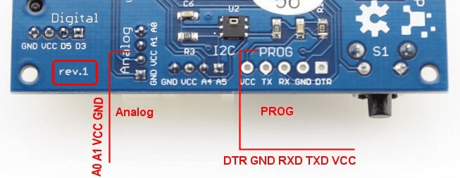

devDuino Sensor Node V 4 is a compact Arduino-compatible microcontroller and is designed to build wireless networks based on transceiver nRF24L01+. You can easily connect other sensors or actuators to this platform, to build your remote monitoring or controlling system. Unlike the version 1,2,3 is on board built-in sensor temperature and humidity.
Model:103990074
In Rev 1 there is an error screen printing on photo shows how should be designated contacts. It is not critical and in some extent does not affect the operability of the device.

In the basic version (without additional sensors) module can be used as a wireless sensor temperature and relative humidity (using built-in sensor HTU21D with level control battery (built-in microcontroller).
Basic functionality can be greatly expanded by connecting the various components GROVE from Seeed Studio.
By default, the standard boot stitched microcontroller Arduino, allowing to record the firmware in the module with the type of programmers FOCA v2.2.
Connecting the programmer via 5-pin (PROG) on the module (battery installed when programming is required - module receives power from the programmer)
Warning! Do not forget to set the programmer working voltage of 3.3V. When flashing the bootloader via ISP, be sure to disconnect the wireless module nRF24L01 +.
Just programmer can be used to debug (monitor port).
If you want to get even further about 2K more memory for your sketch, you can use almost any ISP-Programmer for example, Arduino ISP (regular Arduino-compatible board and a standard example of the environment Arduino) or USBtinyISP.
Connecting programmer via 6-pin connector (ISP) on the module (battery installed when programming is required - module receives power from the programmer).
In the first case, to maximize the operating time of a battery should be fitted in use nRF24L01+ power saving mechanisms:
...
radio.powerUp(); //turn the power on NRF24
// sending data
...
radio.powerDown(); //turn off the power on NRF24
...
Button connected to digital pin of D4 without external pull-up resistor. This connection is necessary to use the built-in pull-up resistor microcontroller.
This is done as follows (in the example being polled button once 0.5s and if it is pressed - LED lights):
void setup (){
// button
pinMode(4, INPUT);
// enable pull-up resistor
digitalWrite(4, HIGH);
// LED
pinMode(9, OUTPUT);
}
void loop(){
if(digitalRead(4) == LOW) {
digitalWrite(9, HIGH);
}
else {
digitalWrite(9, LOW);
}
delay(500);
}
Besides measuring the voltage at the voltage divider with a simple analogRead (A2), you can use more "advanced" way - use the built-in capabilities of the microcontroller.
You can use the following universal function:
long readVcc() {
// Read 1.1V reference against AVcc
// set the reference to Vcc and the measurement to the internal 1.1V reference
#if defined(__AVR_ATmega32U4__) || defined(__AVR_ATmega1280__) || defined(__AVR_ATmega2560__)
ADMUX = _BV(REFS0) | _BV(MUX4) | _BV(MUX3) | _BV(MUX2) | _BV(MUX1);
#elif defined (__AVR_ATtiny24__) || defined(__AVR_ATtiny44__) || defined(__AVR_ATtiny84__)
ADMUX = _BV(MUX5) | _BV(MUX0);
#elif defined (__AVR_ATtiny25__) || defined(__AVR_ATtiny45__) || defined(__AVR_ATtiny85__)
ADMUX = _BV(MUX3) | _BV(MUX2);
#else
ADMUX = _BV(REFS0) | _BV(MUX3) | _BV(MUX2) | _BV(MUX1);
#endif
delay(75); // Wait for Vref to settle
ADCSRA |= _BV(ADSC); // Start conversion
while (bit_is_set(ADCSRA,ADSC)); // measuring
uint8_t low = ADCL; // must read ADCL first - it then locks ADCH
uint8_t high = ADCH; // unlocks both
long result = (high<<8) | low;
result = 1125300L / result; // Calculate Vcc (in mV); 1125300 = 1.1*1023*1000
return result; // Vcc in millivolts
}
The function returns the voltage in millivolts.
In the present pin connector Digital D3. The peculiarity of its use is that this digital signal to the pins of the interrupt can be processed (INT1).
To ensure longer battery module from one battery can reduce the frequency of the microcontroller to 1MHz and lower "threshold" voltage at which it will start to 1.8V.
This is done by adding the following section in the file boards.txt IDE Arduino:
s328o1.name=Sensor328p (int1MHz, 1.8V) s328o1.upload.protocol=arduino s328o1.upload.maximum_size=30720 s328o1.upload.speed=19200 s328o1.bootloader.low_fuses=0x62 s328o1.bootloader.high_fuses=0xda s328o1.bootloader.extended_fuses=0x06 s328o1.bootloader.path=atmega s328o1.bootloader.file=ATmegaBOOT_168_atmega328_pro_8MHz.hex #s328o8.bootloader.file=ATmegaBOOT_168_atmega328.hex s328o1.bootloader.unlock_bits=0x3F s328o1.bootloader.lock_bits=0x0F s328o1.build.mcu=atmega328p s328o1.build.f_cpu=1000000L s328o1.build.core=arduino s328o1.build.variant=standard
After adding this code to the appropriate file (and restarting the Arduino) in the list of available cards will be a new line: Sensor328 (int1MHz, 1.8V)
Warning! Fuse bits specified in the file boards.txt and defining modes of microcontroller sewn Arduino environment only when writing the bootloader (but not the firmware of the microcontroller).
To correct fuse bits without changing the boot loader can be used, for example avrdude GUI
To use the Sensor Node requires the following libraries:
Requires the libraries that are used at work RF24:
Software debugging and use
API
Library has used examples of them just to understand how it works.
Initialization RF-module as follows:
... //RF24 radio(CE,CSN); RF24 radio(8,7); ...
#include <SPI.h> #include "RF24.h" #include <Wire.h> #include "HTU21D.h" #include <avr/sleep.h> #include <avr/wdt.h> #define CNT 30 // количество циклов по 8 секунд между "посылками" (30 = 4 минуты между посылками) int count; //переменная для счётчика циклов volatile boolean wdt_tripped=1; // описание параметров модуля #define SID 500 // идентификатор датчика Внешний 1 #define NumSensors 4 // количество сенсоров (и еще одно обязательное занчение - имя датчика) boolean mode = 0; // 0 - нормальный режим (редко отправляем данные и не моргаем), //1 - тестовый режим (данные отправляем раз в 8 секунд и моргаем светодиодом) ///////////////////////////////////////////////////////////////////////////// // создаём структуру для передачи значений typedef struct{ int SensorID; // идентификатор датчика int ParamID; // идентификатор параметра float ParamValue; // значение параметра char Comment[16]; // комментарий } Message; #define LED 9 #define BUTTON 4 // создаем структуру для описания параметров typedef struct{ float Value; // значение char Note[16]; // комментарий } Parameter; int tests=0; ///////////////////////////////////////////////////////////////////////////// Parameter MySensors[NumSensors+1] = { // описание датчиков (и первичная инициализация) NumSensors, "SN4 (in&out)", // в поле "комментарий" указываем пояснительную информацию о датчике и количество сенсоров 0, "Temp, C", // температура со встроенного датчика 0, "Hum, %", // относительная влажность со встроенного датчика 0, "BATT, Flag", // статус того, что батарейка в порядке (0 - "мертвая", 1 - "живая") 0, "VCC, V", // напряжение питания (по внутренним данным МК) }; Message sensor; ///////////////////////////////////////////////////////////////////////////// //RF24 radio(CE,CSN); RF24 radio(8,7); // выберем две "трубы" (выбираем свои) const uint64_t pipes[2] = { 0xF0F0F0F0A1LL, 0xF0F0F0F0A2LL }; ///////////////////////////////////////////////////////////////////////////// HTU21D myHumidity; //режим сна для МК void system_sleep() { delay(2); // Wait for serial traffic _SFR_BYTE(ADCSRA) &= ~_BV(ADEN); // Switch ADC off set_sleep_mode(SLEEP_MODE_PWR_DOWN); sleep_enable(); sleep_mode(); // System sleeps here sleep_disable(); _SFR_BYTE(ADCSRA) |= _BV(ADEN); // Switch ADC on } void wdt_interrupt_mode() { wdt_reset(); WDTCSR |= _BV(WDIE); // Restore WDT interrupt mode } ISR(WDT_vect) { wdt_tripped=1; // set global volatile variable } void setup() { wdt_disable(); wdt_reset(); wdt_enable(WDTO_8S); //пробуждение каждые 8 сек count = 0; // светик pinMode(LED, OUTPUT); // Инизиализация HTU21D myHumidity.begin(); radio.begin(); //radio.setPALevel(RF24_PA_HIGH); // Уровень мощности (работает только с версией RF + PA) radio.setDataRate(RF24_250KBPS); // Скорость передачи radio.setRetries(15,15); // номер канала, на котором работаем (подобрать свой) radio.setChannel(100); radio.openWritingPipe(pipes[0]); radio.openReadingPipe(1,pipes[1]); radio.stopListening(); // отключаем режим приёма // при старте включаем "тестовый" режим - данные отправляем часто и моргаем светодиодом mode = 1; } void loop(void) { //тут можно увеличить интервал времени между оправками данных по RF24 за счёт счётчика циклов wdt_interrupt_mode(); if (wdt_tripped) { count++; wdt_tripped = 0; // отправим данные, если уже "пора" if (count == ((mode==1) ? (count) : (CNT))) { calculateValue(); // зажжем светодиод if (mode == 1) { digitalWrite(LED, HIGH); } radio.powerUp(); //подаём питание на NRF24 delay(20); for (int i=1; i<=NumSensors; i++){ sendSensorMessage(i); } radio.powerDown(); // отключаем питание RF24 delay(20); count = 0; // погасим светодиод if (mode == 1) { digitalWrite(LED, LOW); } } } if(tests<10) { mode = 1; tests++; } else { mode = 0; } // спать! system_sleep(); //МК засыпает } // функция вычисления всех значений датчиков void calculateValue(){ // код для получения данных // температура и влажность встроенного датчика (HTU21D) MySensors[1].Value = myHumidity.readTemperature(); MySensors[2].Value = myHumidity.readHumidity(); // если напряжение больше 2.67В - батарейка "живая" (1) // если меньше - "скоро помрет" (0) MySensors[3].Value = (MySensors[4].Value > 2.67) ? 1 : 0; // напряжение питания MySensors[4].Value = ((float) readVcc())/1000.0; return; } // отправить сообщение (идентификатор параметра) void sendSensorMessage(int ParamID) { //подготовим данные в структуру для передачи sensor.SensorID = SID; sensor.ParamID = ParamID; sensor.ParamValue = MySensors[ParamID].Value; memcpy(&sensor.Comment,(char*)MySensors[ParamID].Note, 16); //отправляем данные по RF24 bool ok = radio.write( &sensor, sizeof(sensor) ); delay (20); return; } long readVcc() { // Read 1.1V reference against AVcc // set the reference to Vcc and the measurement to the internal 1.1V reference #if defined(__AVR_ATmega32U4__) || defined(__AVR_ATmega1280__) || defined(__AVR_ATmega2560__) ADMUX = _BV(REFS0) | _BV(MUX4) | _BV(MUX3) | _BV(MUX2) | _BV(MUX1); #elif defined (__AVR_ATtiny24__) || defined(__AVR_ATtiny44__) || defined(__AVR_ATtiny84__) ADMUX = _BV(MUX5) | _BV(MUX0); #elif defined (__AVR_ATtiny25__) || defined(__AVR_ATtiny45__) || defined(__AVR_ATtiny85__) ADMUX = _BV(MUX3) | _BV(MUX2); #else ADMUX = _BV(REFS0) | _BV(MUX3) | _BV(MUX2) | _BV(MUX1); #endif delay(75); // Wait for Vref to settle ADCSRA |= _BV(ADSC); // Start conversion while (bit_is_set(ADCSRA,ADSC)); // measuring uint8_t low = ADCL; // must read ADCL first - it then locks ADCH uint8_t high = ADCH; // unlocks both long result = (high<<8) | low; result = 1125300L / result; // Calculate Vcc (in mV); 1125300 = 1.1*1023*1000 return result; // Vcc in millivolts }
/* This sketch is for a DevDuino 4.0 http://www.seeedstudio.com/depot/devDuino-Sensor-Node-V4-ATmega-328-Integrated-temperature-humidity-sensor-p-2279.html and MySensors 1.5 modified 31 December 2015 by greengo */ #include <MySensor.h> // Library of Mysensors.org (v 1.5) #include <SPI.h> #include "HTU21D.h" #include <Wire.h> #include <RunningAverage.h> // Define a static node address, remove if you want auto address assignment #define NODE_ADDRESS 4 // Uncomment the line below, to transmit battery voltage as a normal sensor value #define BATT_SENSOR 3 #define RELEASE "1.1" #define AVERAGES 2 // How many milli seconds between each measurement #define MEASURE_INTERVAL 50000 //for Real Work 50 sec //#define MEASURE_INTERVAL 10000 //for Debug 10 sec // FORCE_TRANSMIT_INTERVAL, this number of times of wakeup, the sensor is forced to report all values to the controller #define FORCE_TRANSMIT_INTERVAL 30 //#define FORCE_TRANSMIT_INTERVAL 10 //for Debug // LED blinks during data transmission. Greater battery energy consumption! #define LED_BLINK_WAIT_TRANSMIT #define TEMP_TRANSMIT_THRESHOLD 0.5 #define HUMI_TRANSMIT_THRESHOLD 0.5 // Pin definitions #define LED_PIN 9 // LED // Child sensor ID's #define CHILD_ID_TEMP 1 #define CHILD_ID_HUM 2 MyTransportNRF24 transport(8, 7); MySensor gw(transport); int oldBattPct = 0; float temp = 0; MyMessage msgTemp(CHILD_ID_TEMP, V_TEMP); MyMessage msgHum(CHILD_ID_HUM, V_HUM); #ifdef BATT_SENSOR MyMessage msgBatt(BATT_SENSOR, V_VOLTAGE); #endif // Global settings int measureCount = 0; int sendBattery = 0; boolean highfreq = true; boolean transmission_occured = false; HTU21D myHumidity; // Storage of old measurements float lastTemperature = 0; int lastHumidity = 0; long lastBattery = 0; RunningAverage raHum(AVERAGES); /**************************************************** * Setup code ****************************************************/ void setup() { // initialize digital pin 9 as an output. pinMode(LED_PIN, OUTPUT); Serial.begin(115200); Serial.print(F("devDuino SNv4")); Serial.println(RELEASE); Serial.flush(); digitalWrite(LED_PIN, HIGH); #ifdef NODE_ADDRESS gw.begin(NULL, NODE_ADDRESS, false); #else gw.begin(NULL,AUTO,false); #endif myHumidity.begin(); digitalWrite(LED_PIN, LOW); Serial.flush(); Serial.println(F(" - Online!")); gw.sendSketchInfo("devDuino SNv4", RELEASE); gw.present(CHILD_ID_TEMP,S_TEMP); gw.present(CHILD_ID_HUM, S_HUM); #ifdef BATT_SENSOR gw.present(BATT_SENSOR, S_POWER); #endif raHum.clear(); sendTempHumidityMeasurements(false); sendBattLevel(false); } /*********************************************** * Main loop function ***********************************************/ void loop() { measureCount ++; sendBattery ++; bool forceTransmit = false; transmission_occured = false; if ((measureCount == 5) && highfreq) if (measureCount > FORCE_TRANSMIT_INTERVAL) { // force a transmission forceTransmit = true; measureCount = 0; } gw.process(); sendTempHumidityMeasurements(forceTransmit); if (sendBattery > 60) { sendBattLevel(forceTransmit); // Not needed to send battery info that often sendBattery = 0; } gw.sleep(MEASURE_INTERVAL); } /********************************************* * Sends temperature and humidity sensor * * Parameters * - force : Forces transmission of a value (even if it's the same as previous measurement) *********************************************/ void sendTempHumidityMeasurements(bool force) { bool tx = force; //get the Temperature from the onboard sensor. float temp = myHumidity.readTemperature(); int humidity = myHumidity.readHumidity(); raHum.addValue(humidity); float diffTemp = abs(lastTemperature - temp); float diffHum = abs(lastHumidity - raHum.getAverage()); Serial.print(F("TempDiff :"));Serial.println(diffTemp); Serial.print(F("HumDiff :"));Serial.println(diffHum); if (isnan(diffHum)) tx = true; if (diffTemp > TEMP_TRANSMIT_THRESHOLD) tx = true; if (diffHum > HUMI_TRANSMIT_THRESHOLD) tx = true; if (tx) { measureCount = 0; Serial.print("T: ");Serial.println(temp); Serial.print("H: ");Serial.println(humidity); // LED #ifdef LED_BLINK_WAIT_TRANSMIT digitalWrite(LED_PIN, HIGH); gw.send(msgTemp.set(temp,1)); gw.send(msgHum.set(humidity)); digitalWrite(LED_PIN, LOW); #else gw.send(msgTemp.set(temp,1)); gw.send(msgHum.set(humidity)); #endif lastTemperature = temp; lastHumidity = humidity; transmission_occured = true; } } /******************************************** * * Sends battery information (battery percentage) * * Parameters * - force : Forces transmission of a value * *******************************************/ void sendBattLevel(bool force) { if (force) lastBattery = -1; long vcc = readVcc(); if (vcc != lastBattery) { lastBattery = vcc; #ifdef BATT_SENSOR gw.send(msgBatt.set(vcc)); #endif // Calculate percentage vcc = vcc - 1900; // subtract 1.9V from vcc, as this is the lowest voltage we will operate at long percent = vcc / 14.0; gw.sendBatteryLevel(percent); transmission_occured = true; } } /******************************************* * * Internal battery ADC measuring * *******************************************/ long readVcc() { // Read 1.1V reference against AVcc // set the reference to Vcc and the measurement to the internal 1.1V reference #if defined(__AVR_ATmega32U4__) || defined(__AVR_ATmega1280__) || defined(__AVR_ATmega2560__) ADMUX = _BV(REFS0) | _BV(MUX4) | _BV(MUX3) | _BV(MUX2) | _BV(MUX1); #elif defined (__AVR_ATtiny24__) || defined(__AVR_ATtiny44__) || defined(__AVR_ATtiny84__) ADMUX = _BV(MUX5) | _BV(MUX0); #elif defined (__AVR_ATtiny25__) || defined(__AVR_ATtiny45__) || defined(__AVR_ATtiny85__) ADcdMUX = _BV(MUX3) | _BV(MUX2); #else ADMUX = _BV(REFS0) | _BV(MUX3) | _BV(MUX2) | _BV(MUX1); #endif delay(2); // Wait for Vref to settle ADCSRA |= _BV(ADSC); // Start conversion while (bit_is_set(ADCSRA,ADSC)); // measuring uint8_t low = ADCL; // must read ADCL first - it then locks ADCH uint8_t high = ADCH; // unlocks both long result = (high<<8) | low; result = 1125300L / result; // Calculate Vcc (in mV); 1125300 = 1.1*1023*1000 return result; // Vcc in millivolts }
| Revision | Description | Release |
| 4.0b | Prototype | 01.11.2014 |
| 4.0 rev 1 | Public version | 22.12.2014 |
This product can be purchased:
China (shipping worldwide)
Seeed store
Elecrow store
Russia
Devicter store